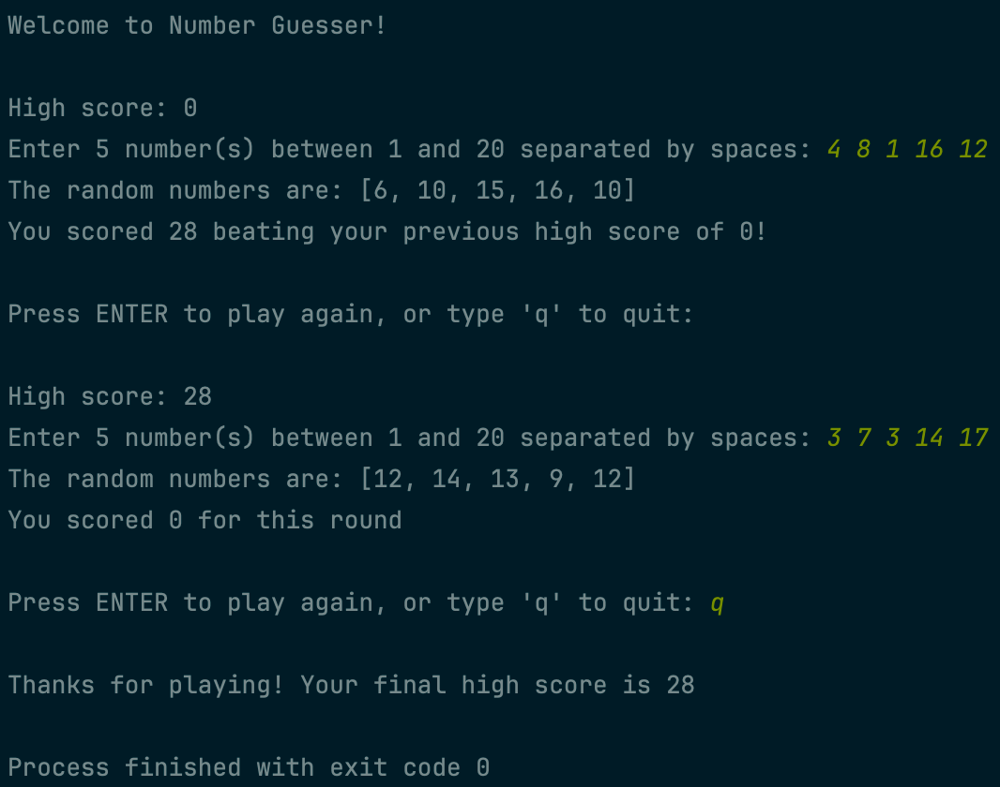
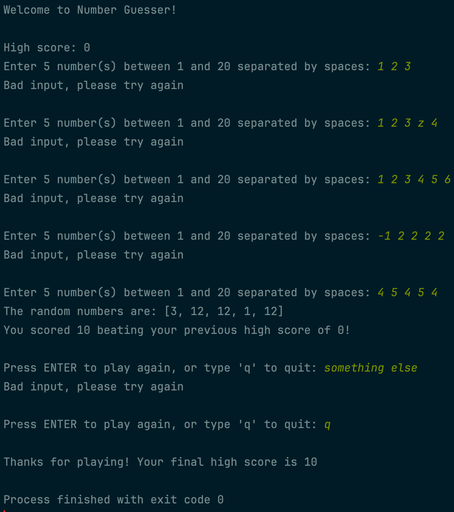

For this project, you’ll create a guessing game! The player will be prompted to enter five numbers between 1 and 20. The game should then choose five random numbers in the same range. The player will then get a score based on how close each of their numbers is to the corresponding random numbers. The player earns points for a number if they are within five of the actual number, and the maximum number of points that is awarded for guessing a number perfectly is 10.
Ex: if the random numbers are 3, 7, 14, 12, 1 and the player chooses 5, 7, 1, 8, 12, the player earns 6 points, 10 points, 0 points, 2 points, and 0 points, respectively, for each pair of numbers.
Once a round is over, the player will be prompted to play again or quit. The game should also store a high score which will be updated between rounds.
 Example gameplay
 Recovery from bad inputs